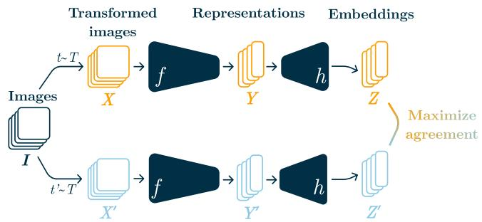

先说结论。通用视觉自监督模型多、训练贵，快速判断表征质量是实际模型迭代的关键问题。 把 SSL 评估从“训练一个线性分类器”转向无监督几何统计，降低评估成本和超参敏感性，并提供 representation space 结构解释。
Figureure 1 · Foundation Models and IDES T: Intra-Dataset CorrelationFigure 1. Foundation Models and IDES T: Intra-Dataset Correlation. Linear probe accuracy of pretrained SSL models on ImageNet (left), iNat-18 (middle left), iNat-21 (middle right), SUN397 (right) versus IDES T on each respective dataset. Each point corresponds to a model checkpoint; point size reflects the number of parameters. We report Kendall’s $\tau \stackrel { \bar { \in } } { \in } [ - 1 , 1 ]$ and Spearman’s $\rho \in [ \bar { - } 1 , 1 ]$ . Correlations across all four benchmarks demonstrate IDES T’s ability to provide insights into models’ representation quality.这张图/表用于判断 IdEst 的实验收益来自哪里。重点看替换、消融或跨模型设置下趋势是否一致，而不是只看单个最高分。

Figureure 7 · Overview of Joint-Embedding ArchitecturesFigure 7. Overview of Joint-Embedding Architectures. Two separate data augmentation operators are sampled from the same distribution $( t , t ^ { \prime } \sim \tau )$ and applied to each image in a batch I to obtain two views, X and X′. An encoder network $f$ and a projection head g are trained to maximize agreement between the resulting embeddings. After training, the encoder $f$ and its representations Y are retained for downstream tasks.这张图概括 IdEst 的整体方法流程。阅读时先看模块之间传递的训练信号，再看作者如何把目标拆成可优化的子问题。
核心问题
通用视觉自监督模型多、训练贵，快速判断表征质量是实际模型迭代的关键问题。
方法拆解
用 Minimum Spanning Tree intrinsic dimension estimator 估计 SSL 表征的内在维度，把它作为 downstream linear probe performance 的几何代理。
主要贡献
把 SSL 评估从“训练一个线性分类器”转向无监督几何统计，降低评估成本和超参敏感性，并提供 representation space 结构解释。
实验看点
摘要称跨数据集、架构和 SSL pretraining objectives，IdEst 与 linear probe 表现强相关，还能用于高效超参选择。
局限与读法
ID 与任务性能的相关性可能受数据 manifold、采样密度和特征归一化影响；它是 proxy，不替代最终 downstream evaluation。